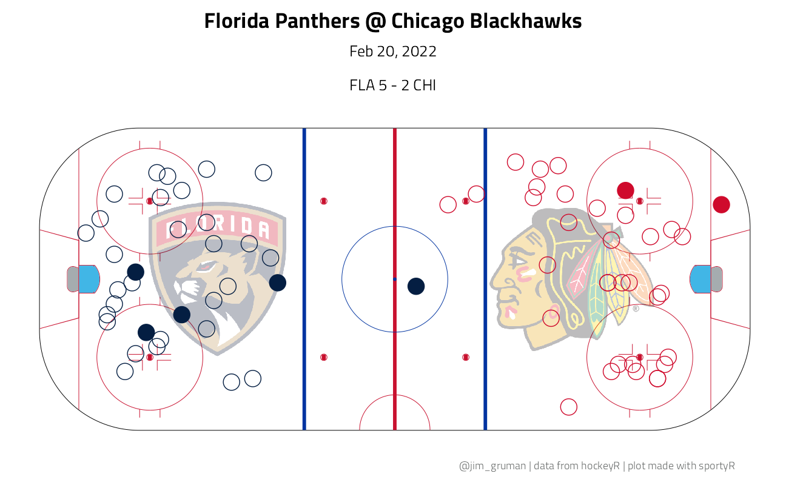
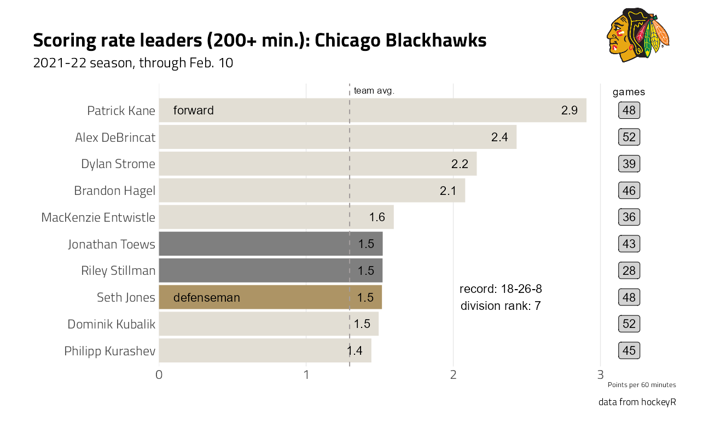
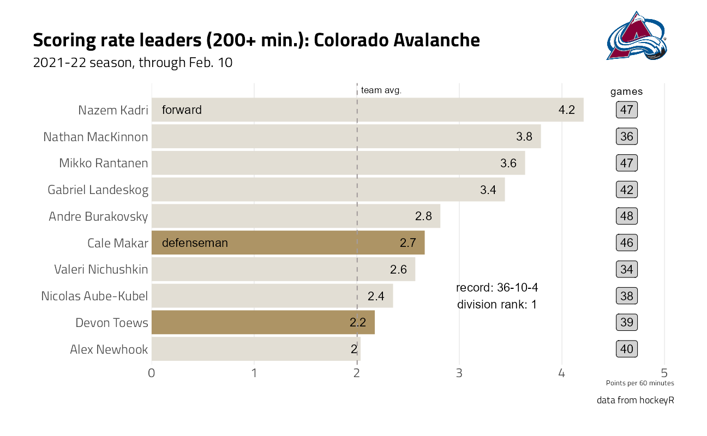

Last updated: 2022-02-23
Checks: 7 0
Knit directory: myTidyTuesday/
This reproducible R Markdown analysis was created with workflowr (version 1.7.0). The Checks tab describes the reproducibility checks that were applied when the results were created. The Past versions tab lists the development history.
Great! Since the R Markdown file has been committed to the Git repository, you know the exact version of the code that produced these results.
Great job! The global environment was empty. Objects defined in the global environment can affect the analysis in your R Markdown file in unknown ways. For reproduciblity it’s best to always run the code in an empty environment.
The command set.seed(20210907) was run prior to running the code in the R Markdown file. Setting a seed ensures that any results that rely on randomness, e.g. subsampling or permutations, are reproducible.
Great job! Recording the operating system, R version, and package versions is critical for reproducibility.
Nice! There were no cached chunks for this analysis, so you can be confident that you successfully produced the results during this run.
Great job! Using relative paths to the files within your workflowr project makes it easier to run your code on other machines.
Great! You are using Git for version control. Tracking code development and connecting the code version to the results is critical for reproducibility.
The results in this page were generated with repository version ca2e4cf. See the Past versions tab to see a history of the changes made to the R Markdown and HTML files.
Note that you need to be careful to ensure that all relevant files for the analysis have been committed to Git prior to generating the results (you can use wflow_publish or wflow_git_commit). workflowr only checks the R Markdown file, but you know if there are other scripts or data files that it depends on. Below is the status of the Git repository when the results were generated:
Ignored files:
Ignored: .Rhistory
Ignored: .Rproj.user/
Ignored: catboost_info/
Ignored: data/2021-11-27glm_wf_final.rds
Ignored: data/CNHI_Excel_Chart.xlsx
Ignored: data/CommunityTreemap.jpeg
Ignored: data/Community_Roles.jpeg
Ignored: data/YammerDigitalDataScienceMembership.xlsx
Ignored: data/accountchurn.rds
Ignored: data/acs_poverty.rds
Ignored: data/advancedaccountchurn.rds
Ignored: data/airbnbcatboost.rds
Ignored: data/austinHomeValue.rds
Ignored: data/austinHomeValue2.rds
Ignored: data/australiaweather.rds
Ignored: data/baseballHRxgboost.rds
Ignored: data/baseballHRxgboost2.rds
Ignored: data/fmhpi.rds
Ignored: data/grainstocks.rds
Ignored: data/hike_data.rds
Ignored: data/nber_rs.rmd
Ignored: data/netflixTitles2.rds
Ignored: data/pets.rds
Ignored: data/pets2.rds
Ignored: data/spotifyxgboost.rds
Ignored: data/spotifyxgboostadvanced.rds
Ignored: data/us_states.rds
Ignored: data/us_states_hexgrid.geojson
Ignored: data/weatherstats_toronto_daily.csv
Untracked files:
Untracked: code/YammerReach.R
Untracked: code/googleCompute.R
Untracked: code/work list batch targets.R
Untracked: environment.yml
Unstaged changes:
Deleted: analysis/2022_02_11_tabular_playground.Rmd
Modified: code/_common.R
Note that any generated files, e.g. HTML, png, CSS, etc., are not included in this status report because it is ok for generated content to have uncommitted changes.
These are the previous versions of the repository in which changes were made to the R Markdown (analysis/2022_02_23.Rmd) and HTML (docs/2022_02_23.html) files. If you’ve configured a remote Git repository (see ?wflow_git_remote), click on the hyperlinks in the table below to view the files as they were in that past version.
| File | Version | Author | Date | Message |
|---|---|---|---|---|
| Rmd | ca2e4cf | opus1993 | 2022-02-23 | title now Plotting NHL Stats |
| Rmd | b18d382 | opus1993 | 2022-02-23 | polish the opening sentence |
| html | b284f7e | opus1993 | 2022-02-23 | Build site. |
| Rmd | b29a2e8 | opus1993 | 2022-02-23 | hockey initial commit |
There is definitely a learning curve in both mastering the craft of making great data visualizations and in finding the best way to build code with ggplot2 to generate them.
Meghan Hall of Hockey-Graphs recently tweeted and blogged on Increasing the Flexibility and Robustness of Plots in ggplot2 and I’d like to build on her work. Please check out her post and follow here:
tweetrmd::include_tweet(tweet_url = "https://twitter.com/MeghanMHall/status/1496155738246467588")New ✨ I wrote up some tips on how to use #ggplot2 #rstats to make plots that are nicely customized but ALSO really flexible. Because having a beautiful custom plot is not that useful if your data changes! https://t.co/e8afijshLD
— Meghan Hall (@MeghanMHall) February 22, 2022
I really enjoy pulling wild-caught data and working with newly released R packages to improve my understanding of what is awesome out there. As Megan did in her example, we are going to pull data through the hockeyR package that scrapes play by play data from NHL.com.
suppressPackageStartupMessages({
library(tidyverse) # clean and transform rectangular data
library(hockeyR)
library(sportyR)
library(cowplot)
library(grumanlib) # my plot theme
})
source(here::here("code","_common.R"),
verbose = FALSE,
local = knitr::knit_global())
ggplot2::theme_set(
theme_jim(base_size = 12) %+replace%
theme(
panel.background = element_blank(),
plot.background = element_rect(fill = "transparent", color = NA),
legend.background = element_rect(fill = "transparent", color = NA),
legend.key = element_rect(fill = "transparent", color = NA),
axis.ticks = element_blank(),
panel.grid.major = element_line(color = "grey90", size = 0.3),
panel.grid.minor = element_blank()
)
)Lets load up the current 2021-22 season of play by play NHL data.
pbp <- load_pbp(season = as.numeric(format(Sys.Date() + 184, "%Y")))
team_info <- hockeyR::team_logos_colorsLet’s first look at a single game. In fact, I’d like to see the most recent game. An easy way to create a shot plot is through the sportyR package. We will also use the included team_colors_logos data to add color and team logos to an example plot that closely follows the hockeyR vignette.
# get the most recent Chicago Blackhawks game data
game <- pbp %>%
filter(home_abbreviation == "CHI") %>%
filter(game_date == max(game_date))
# grab team logos & colors
team_logos <- team_info %>%
filter(team_abbr == unique(game$home_abbreviation) | team_abbr == unique(game$away_abbreviation)) %>%
# add in dummy variables to put logos on the ice
mutate(
x = ifelse(full_team_name == unique(game$home_name), 50, -50),
y = 0
)
# add transparency to the logo
transparent <- function(img) {
magick::image_fx(img, expression = "0.3*a", channel = "alpha")
}
# get only shot events
events <- c("MISSED_SHOT", "SHOT", "GOAL")
shots <- game %>% filter(event_type %in% events) %>%
# adding team colors
left_join(team_logos, by = c("event_team_abbr" = "team_abbr"))
# create shot plot
geom_hockey("nhl") +
ggimage::geom_image(
data = team_logos,
aes(x = x, y = y, image = team_logo_espn),
image_fun = transparent, size = 0.22, asp = 2.35
) +
geom_point(
data = shots,
aes(x_fixed, y_fixed),
size = 6,
color = shots$team_color1,
shape = ifelse(shots$event_type == "GOAL", 19, 1)
) +
labs(
title = glue::glue("{unique(game$away_name)} @ {unique(game$home_name)}"),
subtitle = glue::glue(
"{format(unique(game$game_date), '%b %d, %Y')}\n
{unique(shots$away_abbreviation)} {unique(shots$away_final)} - {unique(shots$home_final)} {unique(shots$home_abbreviation)}"
), y = NULL, x = NULL,
caption = "@jim_gruman | data from hockeyR | plot made with sportyR"
) +
theme(
plot.title = element_text(hjust = 0.5),
plot.subtitle = element_text(hjust = 0.5),
plot.caption = element_text(hjust = .9),
axis.text.x = element_blank(),
axis.text.y = element_blank(),
plot.margin = margin(b = 0),
panel.grid.major = element_blank()
)
Next, let’s create a plotting function that shows the top scorers for any single NHL team for the entire 2021-22 season so far. We are going to need to add the information from the rosters, and clean up positions.
roster <- get_rosters(
team = "all",
season = as.numeric(format(Sys.Date() + 184, "%Y"))
)
position <- roster %>%
select(player, position) %>%
unique() %>%
mutate(position = case_when(
position == "F" ~ "forward",
TRUE ~ "defenseman"
))Let’s also calculate the total points scored for each player, much like Meghan did in her blog post.
points <- pbp %>%
# all goals except for those in the shootout
dplyr::filter(event_type == "GOAL" & period != 5) %>%
# event players 1-3 are those who might get points on each goal
select(game_id, game_date,
team = event_team_abbr, event_player_1_name,
event_player_2_name, event_player_3_name, event_player_1_type,
event_player_2_type, event_player_3_type
) %>%
# this will create a name/type combo for players 1 through 3
pivot_longer(event_player_1_name:event_player_3_type,
names_to = c(NA, ".value"),
names_pattern = "(.+)_(.+)"
) %>%
# only the players who either scored the goal or got an assist
dplyr::filter(type %in% c("Assist", "Scorer")) %>%
count(name, team, name = "points") %>%
mutate(name = str_replace_all(name, "\\.", " "))Similarly, lets calculate an accumulated Time on Ice (TOI) for each player much as Meghan did, but with summarize(.groups = "drop") and slice_max().
# calculate TOI for each player
TOI <- pbp %>%
# create a variable for the length of each event
mutate(length = case_when(
lead(game_id) == game_id ~
lead(period_seconds) - period_seconds,
TRUE ~ 0
)) %>%
select(
length,
game_id,
home_abbreviation,
away_abbreviation,
home_on_1:away_on_7
) %>%
filter(length > 0) %>%
pivot_longer(home_on_1:away_on_7,
names_to = "team",
values_to = "name"
) %>%
filter(!is.na(name)) %>%
mutate(team = ifelse(
str_detect(team, "home"),
home_abbreviation,
away_abbreviation
)) %>%
select(-c(3:4)) %>%
group_by(name, team) %>%
# calculate total TOI and games played
summarize(
TOI = sum(length) / 60,
GP = n_distinct(game_id),
.groups = "drop"
) %>%
mutate(name = str_replace_all(name, "\\.", " ")) %>%
filter(TOI > 200 & !(name %in% c(
"Marc Andre Fleury",
"Ukko Pekka Luukkonen"
))) %>%
# make some name adjustments to account for discrepancies
mutate(
name = case_when(
name == "Drew O Connor" ~ "Drew O'Connor",
name == "Logan O Connor" ~ "Logan O'Connor",
name == "Liam O Brien" ~ "Liam O'Brien",
name == "Ryan O Reilly" ~ "Ryan O'Reilly",
name == "Jean Gabriel Pageau" ~ "Jean-Gabriel Pageau",
name == "K Andre Miller" ~ "K'Andre Miller",
name == "Marc Edouard Vlasic" ~ "Marc-Edouard Vlasic",
name == "Pierre Edouard Bellemare" ~ "Pierre-Edouard Bellemare",
name == "Nicolas Aube Kubel" ~ "Nicolas Aube-Kubel",
name == "Oliver Ekman Larsson" ~ "Oliver Ekman-Larsson",
name == "Pierre Luc Dubois" ~ "Pierre-Luc Dubois",
name == "Ryan Nugent Hopkins" ~ "Ryan Nugent-Hopkins",
name == "Zach Aston Reese" ~ "Zach Aston-Reese",
TRUE ~ name
)
) %>%
# join in points data to calculate rate
left_join(points, by = c("name", "team")) %>%
mutate(
points = replace_na(points, 0),
pts_per_60 = points * 60 / TOI
)
top_points <- TOI %>%
left_join(position, by = c("name" = "player")) %>%
# filter to only the top 10 players per team
group_by(team) %>%
slice_max(n = 10, order_by = pts_per_60) %>%
left_join(select(team_info, full_team_name, team = team_abbr),
by = "team"
)This plot has an annotation in the lower-right corner that lists the team’s record and its rank within its division. Let’s go back and pull them together as well.
# calculate the result of the shootouts by the team that has more goals
SO <- pbp %>%
group_by(game_id) %>%
filter(max(period) == 5) %>%
filter(event_type == "GOAL") %>%
count(game_id, event_team_type) %>%
pivot_wider(names_from = event_team_type, values_from = n) %>%
mutate(SO_result = ifelse(home > away, "home", "away"))
records <- pbp %>%
# calculate the home and away score and game type, by how many game periods
# 3 periods: regulation; 4: overtime; 5: shootout
group_by(
game_id,
home_abbreviation,
away_abbreviation,
home_division_name,
away_division_name
) %>%
summarize(
home = max(home_final),
away = max(away_final),
period = max(period),
.groups = "drop"
) %>%
left_join(select(SO, -c(2:3)), by = "game_id") %>%
# get standings points per game: 2 for win, 1 for OT/SO loss, 0 for reg loss
mutate(
home = ifelse(is.na(SO_result) |
SO_result == "away", home, home + 1),
away = ifelse(is.na(SO_result) |
SO_result == "home", away, away + 1),
home_points = case_when(
home > away ~ 2,
home < away & period > 3 ~ 1,
TRUE ~ 0
),
away_points = case_when(
away > home ~ 2,
away < home & period > 3 ~ 1,
TRUE ~ 0
)
) %>%
select(-c(home:SO_result)) %>%
pivot_longer(
home_abbreviation:away_points,
names_to = c(NA, ".value"),
names_sep = 5
) %>%
mutate(
win = ifelse(points == 2, 1, 0),
loss = ifelse(points == 0, 1, 0),
OT = ifelse(points == 1, 1, 0)
) %>%
group_by(abbreviation, division_name) %>%
# sum the points per team per division
summarize(
wins = sum(win),
losses = sum(loss),
OT = sum(OT),
points = sum(points),
.groups = "drop"
) %>%
# create the record text that will be used on the plot
mutate(record = str_c(wins, losses, OT, sep = "-")) %>%
group_by(division_name) %>%
arrange(division_name, desc(points)) %>%
# calculate the division rank
mutate(rank = row_number())As Meghan did, let’s build out a function that works for any team.
plot_fn <- function(team_name) {
single_team <- top_points %>%
filter(team == team_name)
team_record <- records %>%
filter(abbreviation == team_name) %>%
left_join(select(team_info, team_abbr, team_logo_espn),
by = c("abbreviation" = "team_abbr")
)
pts_rate_avg <- TOI %>%
group_by(team) %>%
summarize(
avg = mean(pts_per_60),
.groups = "drop"
) %>%
filter(team == team_name)
plot <- single_team %>%
group_by(position) %>%
mutate(label = ifelse(pts_per_60 == max(pts_per_60), position, NA)) %>%
ungroup() %>%
ggplot(aes(
x = pts_per_60,
y = reorder(name, pts_per_60),
fill = position
)) +
geom_bar(stat = "identity") +
scale_fill_manual(values = c("#AD9465", "#E2DED4")) +
annotate(
"text",
x = max(single_team$pts_per_60) * 1.1,
y = 11,
vjust = 1.5,
label = "games",
size = 3.5
) +
geom_label(
data = single_team,
aes(
x = max(single_team$pts_per_60) * 1.1,
label = GP
),
fill = "#d3d3d3"
) +
labs(
x = "Points per 60 minutes",
y = "",
title = glue::glue(
"Scoring rate leaders (200+ min.): {unique(single_team$full_team_name)}"
),
subtitle = "2021-22 season, through Feb. 10"
) +
geom_vline(
xintercept = pts_rate_avg$avg,
linetype = "dashed",
color = "#a39d9d"
) +
annotate(
"text",
x = pts_rate_avg$avg,
y = 11,
label = "team avg.",
size = 3,
hjust = -0.1,
vjust = 1.5
) +
geom_text(aes(label = label),
x = 0.1,
hjust = 0
) +
geom_text(
aes(label = round(pts_per_60, 1)),
vjust = 0.5,
hjust = 1.5
) +
annotate(
"text",
x = max(single_team$pts_per_60) * 0.8,
y = 3,
label = glue::glue(
"record: {team_record$record}
division rank: {team_record$rank}"
)
) +
scale_x_continuous(expand = expansion(mult = c(0, .1))) +
theme(
panel.grid.major.y = element_blank(),
legend.position = "none"
) +
labs(caption = "data from hockeyR")
ggdraw() +
draw_plot(plot) +
draw_image(
team_record$team_logo_espn,
x = 0.4,
y = 0.42,
scale = 0.15
)
}So, current stats for the home team here in Chicago:
plot_fn("CHI")
Riley Stillman (defenseman) and Jonathan Toews () have been on and off Injured Reserve this season and did not appear in the roster dataset.
And current stats for Colorado:
plot_fn("COL")
sessionInfo()R version 4.1.2 (2021-11-01)
Platform: x86_64-w64-mingw32/x64 (64-bit)
Running under: Windows 10 x64 (build 22000)
Matrix products: default
locale:
[1] LC_COLLATE=English_United States.1252
[2] LC_CTYPE=English_United States.1252
[3] LC_MONETARY=English_United States.1252
[4] LC_NUMERIC=C
[5] LC_TIME=English_United States.1252
attached base packages:
[1] stats graphics grDevices utils datasets methods base
other attached packages:
[1] grumanlib_0.1.0.9999 cowplot_1.1.1 sportyR_1.0.1
[4] hockeyR_0.1.0.9000 forcats_0.5.1 stringr_1.4.0
[7] dplyr_1.0.8 purrr_0.3.4 readr_2.1.2
[10] tidyr_1.2.0 tibble_3.1.6 ggplot2_3.3.5
[13] tidyverse_1.3.1 workflowr_1.7.0
loaded via a namespace (and not attached):
[1] readxl_1.3.1 backports_1.4.1 systemfonts_1.0.4
[4] workflows_0.2.4 selectr_0.4-2 plyr_1.8.6
[7] splines_4.1.2 listenv_0.8.0 usethis_2.1.5
[10] robotstxt_0.7.13 digest_0.6.29 yulab.utils_0.0.4
[13] foreach_1.5.2 htmltools_0.5.2 yardstick_0.0.9
[16] magick_2.7.3 viridis_0.6.2 parsnip_0.1.7
[19] fansi_1.0.2 magrittr_2.0.2 memoise_2.0.1
[22] tune_0.1.6 tzdb_0.2.0 recipes_0.2.0
[25] globals_0.14.0 spiderbar_0.2.4 modelr_0.1.8
[28] gower_1.0.0 R.utils_2.11.0 hardhat_0.2.0
[31] rsample_0.1.1 dials_0.1.0 colorspace_2.0-3
[34] rvest_1.0.2 textshaping_0.3.6 haven_2.4.3
[37] xfun_0.29 polite_0.1.1 callr_3.7.0
[40] crayon_1.5.0 jsonlite_1.8.0 survival_3.2-13
[43] iterators_1.0.14 glue_1.6.1 gtable_0.3.0
[46] ipred_0.9-12 R.cache_0.15.0 tweetrmd_0.0.9
[49] future.apply_1.8.1 scales_1.1.1 infer_1.0.0
[52] DBI_1.1.2 Rcpp_1.0.8 viridisLite_0.4.0
[55] gridGraphics_0.5-1 GPfit_1.0-8 lava_1.6.10
[58] prodlim_2019.11.13 httr_1.4.2 ellipsis_0.3.2
[61] farver_2.1.0 pkgconfig_2.0.3 R.methodsS3_1.8.1
[64] nnet_7.3-16 sass_0.4.0 dbplyr_2.1.1
[67] janitor_2.1.0 utf8_1.2.2 here_1.0.1
[70] labeling_0.4.2 ggplotify_0.1.0 tidyselect_1.1.2
[73] rlang_1.0.1 DiceDesign_1.9 later_1.3.0
[76] munsell_0.5.0 cellranger_1.1.0 tools_4.1.2
[79] cachem_1.0.6 cli_3.2.0 generics_0.1.2
[82] broom_0.7.12 evaluate_0.15 fastmap_1.1.0
[85] yaml_2.3.4 ragg_1.2.2 rematch2_2.1.2
[88] processx_3.5.2 knitr_1.37 fs_1.5.2
[91] workflowsets_0.1.0 future_1.24.0 mime_0.12
[94] whisker_0.4 R.oo_1.24.0 xml2_1.3.3
[97] compiler_4.1.2 rstudioapi_0.13 curl_4.3.2
[100] reprex_2.0.1 lhs_1.1.4 ggimage_0.3.0
[103] bslib_0.3.1 stringi_1.7.6 highr_0.9
[106] ps_1.6.0 lattice_0.20-45 Matrix_1.3-4
[109] styler_1.6.2 conflicted_1.1.0 vctrs_0.3.8
[112] tidymodels_0.1.4 pillar_1.7.0 lifecycle_1.0.1
[115] furrr_0.2.3 jquerylib_0.1.4 httpuv_1.6.5
[118] R6_2.5.1 promises_1.2.0.1 gridExtra_2.3
[121] parallelly_1.30.0 codetools_0.2-18 MASS_7.3-54
[124] assertthat_0.2.1 rprojroot_2.0.2 withr_2.4.3
[127] parallel_4.1.2 hms_1.1.1 ggfun_0.0.5
[130] grid_4.1.2 rpart_4.1-15 timeDate_3043.102
[133] class_7.3-19 snakecase_0.11.0 rmarkdown_2.11
[136] git2r_0.29.0 getPass_0.2-2 pROC_1.18.0
[139] lubridate_1.8.0 ratelimitr_0.4.1